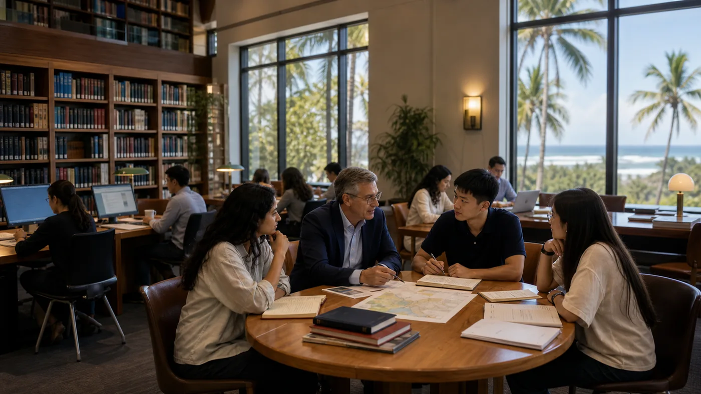

A university for a world being rewritten.一所为正在被重写的世界而立的大学。
Future Citizen University is an interdisciplinary university built for the realities of the emerging world — and for the people who will shape it.未来公民大学，是一所跨学科的大学，为新兴世界的现实而建，也为塑造这一世界的人而建。
The world is being rewritten.世界，正在被重写。
Every few generations, the world is rewritten. Digital systems, artificial intelligence and a new digital economy are reshaping how we govern, work, trade and belong — faster than any single discipline can explain.每隔几代人，世界会迎来一次彻底的重写。数字系统、人工智能与全新的数字经济，正在重塑我们如何治理、如何工作、如何交易、如何归属——其速度，已超出任何单一学科所能独自解释。
Future Citizen University is built for exactly this moment: organised around connected fields of study, it educates people who can both understand and shape the systems of the digital age.未来公民大学正是为这一刻而建:它围绕互联的学术领域组织，培养既能读懂、又能塑造数字时代之系统的人。

Learning is organised around inquiry, judgement and real institutional questions.学习围绕探究、判断与真实机构问题展开。
Across FCU, students encounter teaching as a disciplined conversation between theory, practice and public consequence. Small seminars, research supervision, project work and faculty-led inquiry connect the University's programmes to the systems students will help shape.在 FCU，教学是一场连接理论、实践与公共影响的严谨对话。小型研讨、研究指导、项目学习与教师主导的探究，使大学课程与学生未来将参与塑造的系统相连。
Seminar teaching研讨式教学
Small academic settings support close reading, argument and intellectual precision.小型学术场景支持精读、论证与思想表达的准确性。
Research supervision研究指导
Students develop questions through sustained guidance from faculty.学生在教师持续指导下发展自己的研究问题。
Project work项目学习
Applied work connects academic method with institutional and civic problems.应用型学习把学术方法同机构与公共问题连接起来。
Public consequence公共影响
Teaching asks how knowledge should act responsibly in the world.教学持续追问知识应如何负责任地作用于世界。
An institution at the intersection.立于交汇之处的机构。
To be an internationally distinctive university dedicated to educating the next generation of leaders, builders, thinkers and institution-shapers for the digital age.成为一所具有国际辨识度的大学，致力于为数字时代培养新一代的领导者、建设者、思想者与机构塑造者。
The University sits at the intersection of governance, technology, economy, identity, leadership and communication — domains that conventional institutions treat separately, but which the emerging world experiences as one.大学立于治理、科技、经济、身份、领导力与传播的交汇之处。这些领域为传统机构所分而治之，新兴世界却将其作为一个整体来经历。
Five faculties, one connected university.五个学院，一所互联的大学。
Hover or tap a faculty to see how it connects to the shared core and to the others.悬停或点击任一学院，看它如何与共享内核及其他学院相连。
To provide rigorous, interdisciplinary higher education that prepares students to understand and shape the future relationship between technology, governance, economy, leadership and society — while advancing research, innovation and institutional thought relevant to the emerging world.提供严谨、跨学科的高等教育，使学生得以理解并塑造科技、治理、经济、领导力与社会之间的未来关系；同时推进与新兴世界相关的研究、创新与机构思想。The Mission of Future Citizen University未来公民大学的使命
Academic. Developmental. Institutional.学术 · 育人 · 机构。
Academic学术使命
To deliver high-quality degree programmes that reflect the complexity and interconnectedness of the modern world.提供能够反映现代世界之复杂性与互联性的高质量学位课程。
Developmental育人使命
To cultivate graduates who are not only professionally capable, but also ethically informed, intellectually mature and socially responsible.培养既具专业能力，又有伦理自觉、心智成熟、社会责任感的毕业生。
Institutional机构使命
To contribute ideas, research, frameworks and public value in fields related to digital society, governance innovation and future systems.在数字社会、治理创新、机构现代化与未来系统等领域，贡献思想、研究、框架与公共价值。
A university is defined by how it organises knowledge.大学之所以为大学，在于它如何组织知识。
FCU presents its academic work through clear levels, supervised inquiry, interfaculty teaching and research pathways. The emphasis is on intellectual seriousness, evidence and public purpose.FCU 通过清晰的学位层级、导师指导的探究、跨学院教学与研究路径来呈现其学术工作。其重点在于思想严肃性、证据与公共目的。
Programme architecture课程架构
Awards, levels and credits are shown as a coherent academic ladder.学位、层级与学分以连贯的学术阶梯呈现。
Supervised research导师指导研究
MRes, professional doctorate and PhD routes make research progression visible.MRes、专业博士与 PhD 路径使研究进阶清晰可见。
Interfaculty teaching跨学院教学
Students learn across fields while retaining disciplinary depth.学生跨领域学习，同时保留学科深度。
Public purpose公共目的
Knowledge is connected to institutions, society and responsible practice.知识连接机构、社会与负责任的实践。

Quality is built through teaching, assessment and supervision.质量建立在教学、评估与导师指导之中。
The University's academic work is designed to be legible to students, faculty and partners: expectations are stated clearly, assessment is connected to learning outcomes, and advanced study is supported by sustained supervision.大学的学术工作面向学生、教师与合作伙伴保持清晰可读：学习期待被明确说明，评估与学习成果相连，高阶学习则由持续的导师指导支持。
Clear expectations清晰期待
Programme pages state level, credit, structure, aims and progression routes.课程页面说明层级、学分、结构、目标与进阶路径。
Assessment discipline评估纪律
Coursework, projects, examinations and dissertations are aligned with stated outcomes.课程作业、项目、考试与论文均与既定学习成果相对应。
Supervision culture导师文化
Research students progress through structured guidance, milestones and scholarly review.研究型学生通过结构化指导、里程碑与学术审阅不断推进。
Student support学生支持
Academic advising helps students connect programme choices with intellectual direction.学术指导帮助学生把课程选择与个人思想方向连接起来。
Academic work is held together by clear institutional routines.学术工作由清晰的机构性流程支撑。
The University presents its standards through programme architecture, assessment expectations, supervision practices and review routines. These routines make academic quality visible without turning education into bureaucracy.大学通过课程架构、评估期待、导师指导实践与审阅流程来呈现其学术标准。这些流程让学术质量清晰可见，同时不把教育简化为行政程序。
Programme review课程审阅
Programme aims, learning outcomes and assessment patterns are reviewed as part of a coherent academic ladder.课程目标、学习成果与评估方式作为连贯学位阶梯的一部分被审阅。
Assessment alignment评估对应
Assessment is described in relation to level, credit, method and expected student achievement.评估围绕层级、学分、方法与预期学习成果进行说明。
Research milestones研究里程碑
Research routes are supported by supervision, review points and expectations for independent contribution.研究路径由导师指导、审阅节点与独立贡献期待共同支撑。
Student advising学术指导
Students are helped to connect programme choices with progression, research direction and professional purpose.学生获得支持，以把课程选择同进阶路径、研究方向与专业目标连接起来。

The University connects scholarship with institutions and society.大学把学术研究同机构与社会连接起来。
Academic partnership at FCU is grounded in teaching, research and public purpose. Collaboration is most valuable when it sharpens questions, expands evidence and helps knowledge move responsibly into institutional and civic life.FCU 的学术合作植根于教学、研究与公共目标。真正有价值的合作，应当使问题更清晰、证据更充分，并帮助知识负责任地进入机构与公共生活。
Shared inquiry共同探究
Partners help frame questions that are academically serious and publicly relevant.合作伙伴共同提出兼具学术严肃性与公共相关性的问题。
Research exchange研究交流
Faculty and students work with evidence, cases and comparative perspectives.教师与学生围绕证据、案例与比较视角开展工作。
Teaching connection教学连接
Partnerships can inform studios, seminars, applied projects and supervised research.合作可进入工作室、研讨课、应用项目与导师指导研究。
Public contribution公共贡献
The goal is knowledge that strengthens institutions, professions and civic life.目标是形成能够强化机构、专业与公共生活的知识。
Five principles the University rests on.支撑大学的五项原则。
Interdisciplinarity by Design设计即跨学科
The most important contemporary and future challenges do not occur in isolation. The University's academic structure must enable integration across fields rather than reinforcing unnecessary separation.当代与未来最重要的挑战，皆非孤立发生。大学的学术结构因而必须促成跨领域的整合，而非强化不必要的割裂。
Education for Future Systems面向未来系统的教育
The University is oriented not simply toward conventional professions, but toward the understanding and shaping of systems: digital, public, economic, communication and human systems.大学所面向的，不仅是传统职业，更是对各类系统的理解与塑造：数字系统、公共系统、经济系统、传播系统与人类系统。
Human-Centred Modernity以人为本的现代性
Although deeply engaged with technology and digital society, the University rejects a narrow technocratic conception of education. Ethics, leadership, judgment, culture and human development remain indispensable.大学虽深度参与科技与数字社会，却拒绝狭隘的技术官僚式教育观。它坚信，伦理、领导力、判断力、文化与人类发展始终不可或缺。
Practical Relevance切实的实践关联
Academically serious and practically connected — teaching is linked, wherever appropriate, to real-world application, institutional casework, project-based learning, labs, studios and public engagement.大学力求在学术上严肃、在实践中相连。教学应在适当之处，与现实应用、机构案例、项目式学习、实验室、工作室以及公共或行业参与相结合。
Institutional Responsibility机构责任
More than a teaching provider, the University serves as a constructive institutional actor — generating research, thought leadership and practical contributions relevant to governments, enterprises and society.大学不应仅作为教学提供者而存在，更应成为一个建设性的机构行动者，能够为政府、企业与社会生成研究、思想引领与切实贡献。